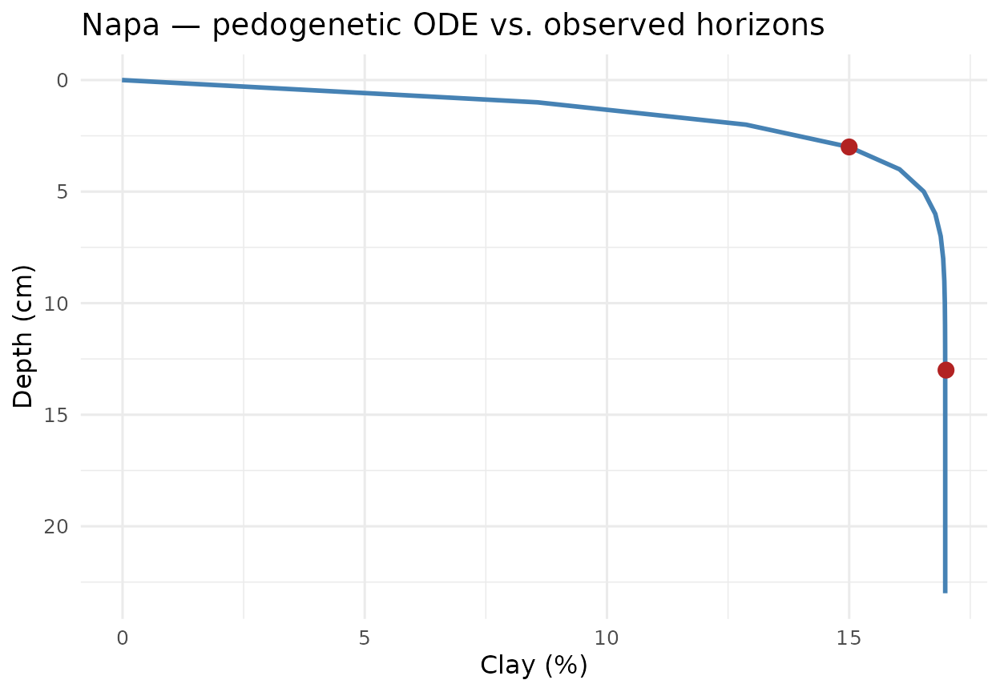

Pilar 2 — Physics-Informed ML for Soil Depth Profiles
Hugo Rodrigues
Source:vignettes/pilar2-piml-profile.Rmd
pilar2-piml-profile.RmdAbstract
Classical Digital Soil Mapping harmonises horizon observations via
equal-area quadratic splines (T. F. A. Bishop, McBratney, and Laslett 1999;
Malone et al. 2009) — a purely
mathematical object disconnected from pedogenesis. The Pillar
2 of edaphos replaces that spline with two
Physics-Informed Machine Learning (PIML) (Raissi, Perdikaris, and Karniadakis 2019; Karniadakis et al. 2021; Willard et al. 2022) models of
the soil depth profile: a parametric pedogenetic Ordinary Differential
Equation (ODE) integrated by deSolve (Soetaert, Petzoldt,
and Setzer 2010), and a Neural ODE (Chen et al. 2018) trained by
back-propagation through a fixed-step Runge-Kutta integrator on
torch (Falbel and Luraschi 2023). Both
models are demonstrated on the aqp::sp4 reference pedons
and a hierarchical covariate-conditioned extension closes the loop with
Pillar 5.
1. Pedogenetic ODE
Let
denote a soil property (e.g. clay fraction, SOC) at depth
.
The one-dimensional kinetic model of translocation (Jenny 1941; Minasny and McBratney 2016) assumes a
depth-dependent relaxation towards a parent-material asymptote
with rate
:
Parameters
carry explicit physical meaning:
is the surface pedogenetic rate;
controls how quickly that rate decays with depth;
is the surface intercept; and
is the parent-material extrapolation. The implementation
[piml_profile_fit()][piml_profile_fit] integrates (1) via
deSolve::lsoda at every loss evaluation and minimises
with Nelder–Mead and Tikhonov
regularisation
.1
2. Dataset — aqp::sp4
We use the ten reference pedons of aqp::sp4 with horizon
concentrations of clay, sand, Ca, Mg, K, CEC and CF.
library(edaphos)
.torch_ok <- requireNamespace("torch", quietly = TRUE) &&
isTRUE(tryCatch(torch::torch_is_installed(),
error = function(e) FALSE))
if (!requireNamespace("aqp", quietly = TRUE)) {
knitr::knit_exit("Package `aqp` not installed — skipping vignette.")
}
data(sp4, package = "aqp")
sp4$depth <- (sp4$top + sp4$bottom) / 2
head(sp4[, c("id", "name", "top", "bottom", "depth", "clay", "K")])
#> id name top bottom depth clay K
#> 1 colusa A 0 3 1.5 21 0.3
#> 2 colusa ABt 3 8 5.5 27 0.2
#> 3 colusa Bt1 8 30 19.0 32 0.1
#> 4 colusa Bt2 30 42 36.0 55 0.1
#> 5 glenn A 0 9 4.5 25 0.2
#> 6 glenn Bt 9 34 21.5 34 0.3
unique(sp4$id)
#> [1] "colusa" "glenn" "kings" "napa"
#> [5] "san benito" "shasta" "tehama" "mariposa"
#> [9] "mendocino" "shasta-trinity"3. Mono-pedon fit: clay translocation in napa
The napa pedon is a canonical argillic-horizon case:
clay increases with depth through illuviation then converges to a
plateau in the parent material. The ODE (1) captures that dynamics
without prescribing the sign of
.
napa <- subset(sp4, id == "napa")
napa[, c("name", "depth", "clay")]
#> name depth clay
#> 10 A 3 15
#> 11 Bt 13 17
fit_napa <- piml_profile_fit(
depths = napa$depth,
values = napa$clay
)
fit_napa
#> <edaphos_piml_profile>
#> dy/dz = -lambda0 * exp(-mu*z) * (y - y_inf)
#> lambda0 = 0.6964 mu = -0.01849
#> y_inf = 16.98 y0 = -0.01188
#> n obs = 2 rmse = 0.01209
#> converged = TRUE
grid_z <- seq(0, max(napa$depth) + 10, by = 1)
pred_napa <- data.frame(depth = grid_z,
clay = predict(fit_napa, grid_z))
library(ggplot2)
ggplot() +
geom_line(data = pred_napa, aes(clay, depth),
linewidth = 1, colour = "steelblue") +
geom_point(data = napa, aes(clay, depth),
size = 3, colour = "firebrick") +
scale_y_reverse() +
labs(x = "Clay (%)", y = "Depth (cm)",
title = "Napa — pedogenetic ODE vs. observed horizons") +
theme_minimal(base_size = 12)
4. Multi-pedon diagnostics
Fitting the full sp4 dataset recovers an interpretable
table where every row has a direct pedological meaning.
fits <- piml_profile_fit_group(
sp4, id = "id", depth = "depth", value = "clay"
)
tab <- do.call(rbind, lapply(names(fits), function(k) {
p <- fits[[k]]$params
data.frame(
pedon = k,
lambda0 = signif(p$lambda0, 3),
mu = signif(p$mu, 3),
y_inf = signif(p$y_inf, 3),
y0 = signif(p$y0, 3),
rmse = signif(fits[[k]]$rmse, 3)
)
}))
tab
#> pedon lambda0 mu y_inf y0 rmse
#> log_lambda0 colusa 5.29e-03 -0.0964 61.900 22.8000 1.7600
#> log_lambda01 glenn 2.62e-01 -0.0541 34.000 -0.0232 0.0239
#> log_lambda02 kings 5.91e-02 -0.1090 27.000 -0.3850 0.0155
#> log_lambda03 mariposa 1.15e-06 2.0900 10.000 30.2000 3.1100
#> log_lambda04 mendocino 5.18e-01 0.0943 23.100 6.4900 0.0281
#> log_lambda05 napa 6.96e-01 -0.0185 17.000 -0.0119 0.0121
#> log_lambda06 san benito 3.81e-02 -0.7500 19.000 0.6070 0.0135
#> log_lambda07 shasta 3.21e-02 1.8600 0.247 14.2000 0.0103
#> log_lambda08 shasta-trinity 4.43e-02 -0.0160 75.800 18.7000 1.6100
#> log_lambda09 tehama 5.77e-03 -0.5500 32.000 23.9000 0.02905. Non-physical baselines
Two baselines bound the improvement claim: the mean predictor and the linear-in-depth regression. A meaningful PIML gain should come from the physical constraint, not from extra parameters.
baseline_rmse <- function(sub, target) {
y <- sub[[target]]
c(mean = sqrt(mean((y - mean(y))^2)),
linear = sqrt(mean(stats::residuals(
stats::lm(y ~ sub$depth))^2)))
}
bench <- do.call(rbind, lapply(split(sp4, sp4$id), function(sub) {
bl <- baseline_rmse(sub, "clay")
data.frame(pedon = sub$id[1],
piml = fits[[sub$id[1]]]$rmse,
mean_baseline = bl["mean"],
linear_baseline = bl["linear"])
}))
bench
#> pedon piml mean_baseline linear_baseline
#> colusa colusa 1.75694932 12.871966 3.0163775
#> glenn glenn 0.02392376 4.500000 0.0000000
#> kings kings 0.01548473 9.797959 2.5628166
#> mariposa mariposa 3.11248566 3.112475 2.7467763
#> mendocino mendocino 0.02812509 4.320494 2.5935243
#> napa napa 0.01209286 1.000000 0.0000000
#> san benito san benito 0.01352761 3.500000 0.0000000
#> shasta shasta 0.01031422 0.000000 0.0000000
#> shasta-trinity shasta-trinity 1.61442621 16.697305 3.0480840
#> tehama tehama 0.02900815 3.559026 0.83607966. Neural ODE variant
For profiles where the mono-asymptotic prior is violated — illuviated
bulges, E horizons beneath A, buried paleosols — edaphos
offers a Neural ODE alternative (Chen et al. 2018):
The forward map is a fixed-step RK4
integrator written directly in torch, so training
back-propagates the squared-error loss through the whole trajectory:
$$
\mathcal{J}_{\text{NODE}}(\theta)
\;=\;\sum_{j}\Bigl(
\underbrace{\int_{0}^{z_{j}}f_{\theta}(z,y(z))\,dz
+y_{0}}_{\text{RK4 rollout}}
\;-\;y_{j}\Bigr)^{2}.
$$
nn_fit <- piml_neural_ode_fit(
depths = napa$depth, values = napa$clay,
hidden = c(16L, 16L), epochs = 500L,
seed = 1L, verbose = FALSE
)
nn_fit
pred_nn <- data.frame(depth = grid_z,
clay = predict(nn_fit, grid_z))
ggplot() +
geom_line(data = pred_napa, aes(clay, depth,
colour = "Parametric ODE"), linewidth = 1) +
geom_line(data = pred_nn, aes(clay, depth,
colour = "Neural ODE"), linewidth = 1) +
geom_point(data = napa, aes(clay, depth),
size = 3, colour = "firebrick") +
scale_y_reverse() +
scale_colour_manual(values = c("Parametric ODE" = "steelblue",
"Neural ODE" = "darkgreen")) +
labs(x = "Clay (%)", y = "Depth (cm)",
colour = NULL,
title = "Napa — parametric vs. Neural ODE") +
theme_minimal(base_size = 12)7. Pillar 2 × Pillar 5 — the physics gate
Given a PIML fit (parametric or neural), the helper
[al_physics_gate_piml()][al_physics_gate_piml] constructs a
rejection function: candidates whose predicted target falls outside the
envelope
inflated by a safety_factor are eliminated from the greedy
Active-Learning selection (see the Pillar 5 vignette).
gate <- al_physics_gate_piml(fit_napa, safety_factor = 1.2)
cand_dummy <- data.frame(dummy = 1:4)
gate(cand_dummy, predicted_mean = c(10, 25, 200, -5))A hierarchical extension
([piml_hierarchical_fit()][piml_hierarchical_fit]) jointly
fits a covariate-conditioned Neural ODE across pedons, delivering a
per-location envelope that
[al_physics_gate_piml_hierarchical()][al_physics_gate_piml_hierarchical]
feeds back into Pillar 5.
8. Bayesian posterior over the ODE parameters
[piml_profile_fit()][piml_profile_fit] returns a single
point estimate. For any honest downstream use — propagating parametric
uncertainty into a SOC-stock prediction, tuning a Pillar 5
Active-Learning acquisition under correct epistemic variance, reporting
publishable parameter intervals — we need the posterior
,
not just the MAP.
The function
[piml_profile_fit_bayesian()][piml_profile_fit_bayesian]
returns that posterior through two nested approximations:
- Laplace approximation (default, O(ms) per pedon). Gaussian posterior whose mean is the MAP and whose covariance is the inverse observed Fisher information at the MAP (C. M. Bishop 2006, sec. 4.4). Accurate when the posterior is well-identified; every call pre-samples 2 000 draws from for predictive convenience.
- Adaptive random-walk Metropolis (Haario, Saksman, and Tamminen 2001) (~seconds per pedon). Proposal covariance starts at the Laplace covariance, scaled by the Roberts–Gelman–Gilks optimal factor , and is updated online by Haario recursion after a warm-up period — so non-Gaussian or multimodal posteriors are captured faithfully where Laplace would paper over them.
library(edaphos)
depths <- c(5, 15, 30, 60, 100)
values <- c(25, 18, 12, 8, 6.5)
fit_bayes <- piml_profile_fit_bayesian(depths, values,
method = "laplace", seed = 1L)
fit_bayes
#> <edaphos_piml_bayes>
#> method : laplace
#> n draws : 2000
#> sigma (noise): 0.1653
#> posterior summary (natural scale):
#> parameter mean sd q2.5 q50 q97.5
#> lambda0 0.049297 0.002576 0.044338 0.049178 0.05456
#> mu 0.004304 0.005185 -0.006121 0.004381 0.01402
#> y_inf 6.099539 0.494554 5.152917 6.092925 7.08908
#> y0 30.235724 0.457493 29.318151 30.236646 31.14020
predict(fit_bayes,
newdepths = c(10, 20, 40, 80),
interval = 0.95,
include_obs_noise = TRUE,
seed = 1L)
#> depth mean sd lower upper
#> 1 10 20.993046 0.2151183 20.584167 21.390906
#> 2 20 15.493301 0.2146955 15.061513 15.954735
#> 3 40 10.056425 0.2279395 9.605178 10.494935
#> 4 80 7.031722 0.2363028 6.633251 7.457589include_obs_noise = TRUE adds Gaussian observation noise
with the MAP-estimated
onto every predictive draw, so the returned interval represents the
predictive distribution of a future observation rather than the
uncertainty on the mean function alone.
For the Neural-ODE variant the variational analogue is a deep
ensemble (Lakshminarayanan, Pritzel, and
Blundell 2017): K independent networks trained
from different random seeds produce an empirical posterior whose mean
and variance approximate the Bayesian predictive posterior (Wilson and Izmailov
2020).
ens <- piml_neural_ode_fit_ensemble(depths, values,
K = 5L, epochs = 300L, seed = 1L)
predict(ens, newdepths = c(10, 20, 40, 80), interval = 0.9)9. Discussion and roadmap
The parametric ODE is mono-asymptotic and therefore optimal for properties that decay monotonically toward a parent-material value (SOC, some nutrients) but suboptimal for bimodal profiles, which the Neural ODE handles by construction. Three complementary directions remain on the roadmap:
- Mass-conservation soft constraints — augment the Neural ODE loss with a term penalising deviations from an integrated mass balance (Minasny et al. 2017).
- Adjoint-method Neural ODE — for pedons deeper than 2 m, the back-propagation graph becomes memory-bound; the adjoint method of (Chen et al. 2018) eliminates that scaling.
-
Hierarchical Bayesian pooling — extending
[
piml_hierarchical_fit()][piml_hierarchical_fit] to the posterior regime that [piml_profile_fit_bayesian()][piml_profile_fit_bayesian] already exposes for single pedons, with covariate-conditioned priors over .